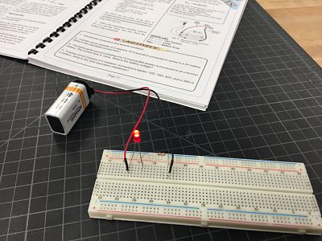
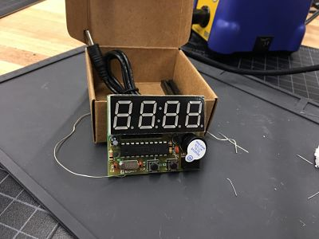

On the 7th rotation, we learnt about soldering, electronics and arduino.
Our first assignment for this rotation is to answer some questions about basic electronics. Here are the questions:
Describe what each component does: Capacitor, transistor, resistor, led, diode, potentiometer, breadboard, multimeter and switch
Capacitator stores electrical energy; Transitor: a semiconductor device, able to amply or switch electronic signal and electrical power; LED: a semiconductor source of light; diode: a two-terminal semiconductor device that only allows current in one direction; Potentiometer: a variable resistor with adjustable third terminal; Breadborad: a board for experimenting electric circuits; Multimeter: a device used to measure elctronic current, voltage and usually resistance; Switch: turns components on and off.
Reisistence is the measurements of opposition to the flow of an electric current; Voltage is a force of potential difference between two terminals; Current is the flow of electric charge.
Our first assignment is using a manual in the Electric Kit and assemble some elctric circuits.



The second assignment for this rotation is soldering. Soldering is a process of combining two or more items by melting metal into the joints. I made an electric clock using soldering. It was quite challenging at first to get the correct amount of metal needed for each joint, but once I got used to it, everything proceeded quite smoothly. However, I made a mistake of soldering a wrong part at the end, and thus, I could not complete the project as expected.
 Back to Index